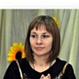

Дошкольное отделение гимназии № 1563
В 2015 году 45% первоклассников Гимназии № 1563 пришли из дошкольного отделения.
- 11-я Парковая улица, 44А
- 11-я Парковая улица, 48А
Воспитатели
Воспитатели, которых чаще всего благодарят родители (отзывы и профили сотрудников взяты с официального сайта школы):
 Воспитатель
Безусская Оксана Михайловна
Воспитатель
Безусская Оксана Михайловна
5 благодарностей |
Воспитатель
Немкова Мария Анатольевна
5 благодарностей |
Воспитатель
Романова Светлана Ивановна
3 благодарности |
Воспитатель
Красюк Виктория Александровна
3 благодарности |
|
Воспитатель
Наумов Даниил Игоревич
2 благодарности |
Воспитатель
Карпова Галина Михайловна
2 благодарности |

Воспитатель
Алиева Наталья Викторовна
1 благодарность |
Воспитатель
Руссу Ирина Сергеевна
1 благодарность |
 Воспитатель
Султанова Альбина Владимировна
Воспитатель
Султанова Альбина Владимировна
1 благодарность |
Муз. рук.
Стражко Ольга Александровна
1 благодарность |
Отзывы
Данные собраны c официального сайта школы и через форму для отзывов.
Здравствуйте! Хочу поблагодарить музыкального руководителя Шахбазян Нору Беняминовну за подготовку и проведение выпускного праздника в подготовительной группе 8. Праздник получился познавательный и веселый. Всем очень понравился.Удручало отсутствие второго воспитателя на празднике, одному пришлось не легко. Большое спасибо заведующей Цветковой Валерии Николаевне. Это прекрасный, отзывчивый, светлый человек, готовый всегда помочь. Под ее руководством работают талантливые люди. Осталось приятное впечатление о всех работниках сада и душевной атмосфере царящей здесь. Спасибо медсестре Марии Александровне, всегда готовой помочь. Спасибо воспитателям Наумову Даниилу Игоревичу и Руссу Ирине Сергеевне, а также помощнику воспитателя Кирьяновой Татьяне Александровне. Хочу выразить благодарность Даниилу Игоревичу. Он хороший воспитатель, прекрасно ладит с детьми и они его слушают и любят.
Всем родительским коллективом благодарим Романову Светлану Ивановну, Смирнову Марину Михайловну и Колодину Юлию Александровну за спортивные соревнования, посвященные 23 февраля!!!
Праздник удался на славу- было весело и деткам и родителям ! Спасибо за Ваш труд, заботу и позитив, которым Вы делитесь !
Праздник удался на славу- было весело и деткам и родителям ! Спасибо за Ваш труд, заботу и позитив, которым Вы делитесь !
Родители подготовительной группы № 10 ДО 1 ГБОУ 1563 поздравляют с победой воспитателя по физической культуре Романову Светлану Ивановну и команду «Звёздочки», занявших 3 место в межрайонных спортивных соревнованиях «Весёлые старты»!
Уважаемая Светлана Ивановна, спасибо Вам за отличную физическую подготовку наших детей!
Отдельно хотим поблагодарить наших любимых воспитателей Новикову Людмилу Александровну и Карпову Галину Михайловну за их горячую поддержку во всех конкурсах и соревнованиях!
Вложенный файл
Уважаемая Светлана Ивановна, спасибо Вам за отличную физическую подготовку наших детей!
Отдельно хотим поблагодарить наших любимых воспитателей Новикову Людмилу Александровну и Карпову Галину Михайловну за их горячую поддержку во всех конкурсах и соревнованиях!
Вложенный файл
Добрый день.
После всех тех ужасов, которые обычно пишут про детские сады на разных форумах, очень страшно отдавать своего ребенка куда бы то ни было. Поэтому я очень ответственно подходила к выбору сада для своего ребенка, перечитала кучу отзывов на форумах, поспрашивала соседей и родителей на площадках, после чего выбрала этот сад приоритетным при постановке в очередь.
И вот моя дочь второй год ходит в сад №558 (структурное подразделение №1 при ГБОУ 1563).
Сразу хочу сказать, что я очень довольная садом. Очень!
Очень мягкий адаптационный период. К детям стараются подходить индивидуально и учитывать особенности характера каждого ребенка.
Внимательные и профессиональные педагоги. Много занимаются, много гуляют.
Очень импонирует то, что даже на прогулках воспитатели занимаются с детьми какими-то подвижными играми или общественно полезными занятиями. Очень много дополнительных занятий - тоже огромный плюс. Вкусное и разнообразное питание.
Ребенок бежит в садик с удовольствием. А это, я считаю, главный показатель!
Хочу отдельно поблагодарить наших воспитателей группы №2 Колодину Юлию Александровну, Смирнову Марину Михайловну и Султанову Альбину Владимировну, которая вела у нас в прошлом году. А также помощников воспитателей.
Огромное спасибо всем сотрудникам детского сада и отдельное спасибо заведующей Цветковой Валерии Николаевне.
После всех тех ужасов, которые обычно пишут про детские сады на разных форумах, очень страшно отдавать своего ребенка куда бы то ни было. Поэтому я очень ответственно подходила к выбору сада для своего ребенка, перечитала кучу отзывов на форумах, поспрашивала соседей и родителей на площадках, после чего выбрала этот сад приоритетным при постановке в очередь.
И вот моя дочь второй год ходит в сад №558 (структурное подразделение №1 при ГБОУ 1563).
Сразу хочу сказать, что я очень довольная садом. Очень!
Очень мягкий адаптационный период. К детям стараются подходить индивидуально и учитывать особенности характера каждого ребенка.
Внимательные и профессиональные педагоги. Много занимаются, много гуляют.
Очень импонирует то, что даже на прогулках воспитатели занимаются с детьми какими-то подвижными играми или общественно полезными занятиями. Очень много дополнительных занятий - тоже огромный плюс. Вкусное и разнообразное питание.
Ребенок бежит в садик с удовольствием. А это, я считаю, главный показатель!
Хочу отдельно поблагодарить наших воспитателей группы №2 Колодину Юлию Александровну, Смирнову Марину Михайловну и Султанову Альбину Владимировну, которая вела у нас в прошлом году. А также помощников воспитателей.
Огромное спасибо всем сотрудникам детского сада и отдельное спасибо заведующей Цветковой Валерии Николаевне.
Хочу выразить благодарность нашим воспитателям группа №7-Ефремовой Елизавете Леонидовне,Алиевой Наталии Викторовне и Юлии Романовне за интересные занятия, любовь к детям, за внимательное отношение. Моя дочь Соня с удовольствием ходит в детский сад и очень скучает по саду в выходные. Спасибо за познавательные мультики, была очень обрадована знаниям ребенка о правилах дорожного движения и об электричестве.Спасибо за то, что стараетесь много гулять и игры на прогулке.
Вложенный файл
Вложенный файл
Наша семья от всей души поздравляет нашу замечательную заведующую Валерию Николаевну. наших любимых воспитателей Марию Анатольевну, Оксану Михайловну, их помощника Анжелику Юрьевну и весь коллектив нашего дошкольного отделения с Днем воспитателя и дошкольного работника! Желаем здоровья и терпения, много сил, упорства и добра! Спасибо вам за заботу о наших детках!
Здравствуйте, хочу выразить свою благодарность замечательному воспитателю детского садика Красюк Виктории Александровне! Мой младший сын Гордей в этом году первый раз пришел в садик и благодаря Виктории Александровне адаптация прошла просто замечательно, ребенок с радостью ходил весь год. Виктория Александровна очень внимательно относится к деткам и всегда занимает их интересными занятиями. А как красиво оформлена группа, это просто чудо! Спасибо за таких воспитателей!!!
Моя внучка до недавнего времени посещала дошкольное образовательное учреждение гимназии №1563, но переехав жить в г.Балашиха нам, к сожалению, пришлось перейти в садик поближе к дому. Жаль расставаться с таким замечательным коллективом! Ведь здесь работают не только профессионалы своего дела, но и добрые, внимательные, чуткие, неравнодушные, замечательные люди. Каждому из них можно сказать много добрых слов благодарности! Спасибо всем Вам большое! Особые слова благодарности нашему любимому воспитателю группы №8 "Фантазеры" Ольге Александровне! Мы желаем Вам только удачи и благополучия.
Если вы нашли ошибку или неточность, пожалуйста, сообщите нам об этом.
Ученик, выпускник или родитель? Оставьте отзыв о детском саде.